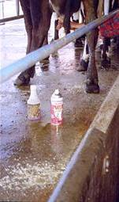
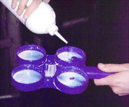
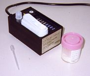
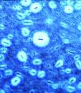
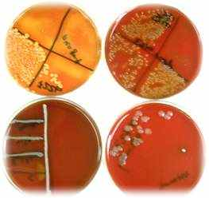

A variety of methods are available to diagnose the presence of mastitis:

Observation
Examining milk for the presence of flecks or clots or change of colour.
The udder maybe swollen, hot or hard.
Palpation is a useful means of detecting mastitis in dry cows, when
stripping milk is undesirable as this would disrupt the keratin plug.…
 Rapid
Mastitis Test Rapid
Mastitis Test
This test is used to diagnose sub-clinical mastitis. The test uses
a detergent reagent which when mixed with milk lyses somatic cells
and causes their DNA to form a gel/ clot. The greater the number of
cells present, the thicker the clot.
The test is therefore useful when investigating somatic cell count
problems in a herd, and it is recommended that farmers test all cows
at the end of the colostrum period prior to entry into the herd.
Scoring and Interpretation of the R.M.T. Douglas et al. 1997
|
Scoring |
Precipitation |
Somatic cell count interpretation (x1000 cells / ml) |
|
Negative |
None |
0-200 |
|
Trace |
Slight |
150-400 |
|
1 |
Small amount of precipitate |
300-1000 |
|
2 |
Distinct precipitate |
700-2000 |
|
3 |
gel |
>2000 |

RMT procedure:
Withdraw milk from each quarter into the RMT paddle.
Add an equal amount of reagent to the milk. Swirl
the paddle approximately 10 times. Assess
the degree of viscosity.

Electrical conductivity
When milk becomes mastitic its electrical conductivity alters due
to an increase in the ionic content of the milk.
Each cow has her own "normal" level which varies from cow to cow,
therefore it is not possible to give an absolute value indicating
mastitis. It is important to check each quarter of the cow and compare
values. A different value in one quarter means that the quarter is
probably infected.
There is a range of meters available on the market. With some the
value displayed increases with mastitic milk; with others it decreases.
You need to be familiar with the type of meter you are using.
Care needs to be taken with interpretation when multiple quarters
are infected. The lowest (or highest with some meters) value should
be interpreted as un-infected.
There is not always a good relationship between conductivity and somatic
cell count.
Herd-test
results
(Individual cow somatic cell count)
Herd testing is a service offered to dairy farmers by the Livestock
Improvement Corporation (LIC). Samples are collected from all cows
in the milking herd and amongst other things the individual cow somatic
cell counts are reported back to the farmer. The result is based on
the composite milk of all four quarters.
A level of >150,000 means there is a good chance at least one quarter
is infected.
About 75% of dairy farmers in New Zealand herd test. The information
is commonly used to make decisions about culling and dry cow therapy.
At least three tests are required annually to show trends in cows
cell count levels and make these decisions accurately .
 |
 |
Direct Stain
A smear from milk deposited on a glass slide can be stained with methylene
blue for direct microscopic examination.
Blood Agar
Milk
samples can be plated on blood agar for culture. Most veterinary
practices send samples to a diagnostic laboratory for culturing.
Antibiotic
sensitivity testing is also routinely performed by diagnostic
labs.
Testing milk samples is an important part of dealing with herd
mastitis problems, both to understand the source of the problem
(environmental vs. contagious), and to help make appropriate
Dry Cow Therapy choices for the herd.
The information gained by culturing samples could also be useful
when treating refactory clinical cases.
Collecting a milk sample
- Disinfect
the teat end of the quarter to be sampled, with 70% methylated
spirit on cotton wool or a swab.
- Hold
the sterile tube nearly horizontal (to avoid debris dropping
into it). Remove the cap and keep hold of this with the
little finger to avoid it being contaminated.
- After
removal of the first stream of milk (to remove streak canal
contaminants), milk a few mls of milk into the container.
- Keep
cool and send to the laboratory as soon as possible.
If there is to be a delay before sending to the lab then
freeze the sample.
Tips on Removing milk from a cow
Note: kneading the udder prior to milking can stimulate let-down and aid
in collection of the sample.
- After
cleaning the teat as described above, block off the top of the
teat firmly with your thumb and fore finger.
- Express
the milk from the teat by squeezing the teat progressively from
top to bottom with your other three fingers.
- Release your thumb and forefinger to allow the teat to again fill
with milk then repeat.
 TAKE
CARE! TAKE
CARE!
While most cows tolerate handling of the udder and teats in the cowshed
some do not.
Heifers in particular are often unused to the milking procedure
and mastitis can be a very painful condition.
Remember - any cow can kick and injure the handler at any time!
Home
Definition
Epidemiology
Microbiology
Diagnosis
Treatment
Prevention
|